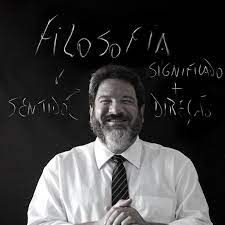

PALESTRANTES


Joel Jota
Professor, escritor, palestrante, empreendedor e mentor de negócios. Já ajudou dezenas de empresas a faturarem milhões de reais em seus negócios.
Durante quase duas décadas foi atleta profissional de natação e inúmeras vezes campeão nacional. Chegou a ser um dos melhores nadadores do mundo. Sua vida foi pautada em pilares como disciplina, foco e muito treinamento. Após sua carreira como nadador, Joel se tornou um treinador de alta performance. É autor dos livros “100% Presente” e “O Sucesso é Treinável”.
Professor, escritor, palestrante, empreendedor e mentor de negócios. Já ajudou dezenas de empresas a faturarem milhões de reais em seus negócios.
Durante quase duas décadas foi atleta profissional de natação e inúmeras vezes campeão nacional. Chegou a ser um dos melhores nadadores do mundo. Sua vida foi pautada em pilares como disciplina, foco e muito treinamento. Após sua carreira como nadador, Joel se tornou um treinador de alta performance. É autor dos livros “100% Presente” e “O Sucesso é Treinável”.


Mário Sérgio Cortella
Mário Sérgio Cortella
Filósofo, escritor, educador e professor universitário com Mestrado e Doutorado em Educação pela PUC-SP, onde é professor da Pós-Graduação em Educação e também do Departamento de Teologia e Ciências da Religião.
O palestrante convida e conduz o público à reflexão, com conteúdos filosóficos que podem ser aplicados a vida pessoal e profissional, inclusive, quando relacionado a maneira como absorvemos, aprendemos e repassamos o conhecimento adquirido.
Filósofo, escritor, educador e professor universitário com Mestrado e Doutorado em Educação pela PUC-SP, onde é professor da Pós-Graduação em Educação e também do Departamento de Teologia e Ciências da Religião.
O palestrante convida e conduz o público à reflexão, com conteúdos filosóficos que podem ser aplicados a vida pessoal e profissional, inclusive, quando relacionado a maneira como absorvemos, aprendemos e repassamos o conhecimento adquirido.


Felipe Titto
Empresário, palestrante, ator e influenciador digital com 8 Milhões de seguidores, Felipe Titto é um dos nomes mais requisitados pelo mercado publicitário.
Felipe Titto é uma das principais estrelas da atualidade se destacou como apresentador na MTV, por suas atuações na rede Globo, como repórter e comandando seu próprio quadro no Vídeo Show.
Empresário, palestrante, ator e influenciador digital com 8 Milhões de seguidores, Felipe Titto é um dos nomes mais requisitados pelo mercado publicitário.
Felipe Titto é uma das principais estrelas da atualidade se destacou como apresentador na MTV, por suas atuações na rede Globo, como repórter e comandando seu próprio quadro no Vídeo Show.


Edney Souza
Especialista em inovação, inteligência artificial e marketing digital, trabalha com tecnologia há mais de 30 anos. Fundou 7 startups do zero e foi vencedor do Prêmio Digitalks.
Professor, palestrante, consultor e conselheiro, Edney Souza, conhecido no mundo digital como InterNey por ser um dos pioneiros da internet brasileira, é co-fundador de 7 startups, entre elas: Pólvora, boo-box, 00k e SigmaGeek.
Especialista em inovação, inteligência artificial e marketing digital, trabalha com tecnologia há mais de 30 anos. Fundou 7 startups do zero e foi vencedor do Prêmio Digitalks.
Professor, palestrante, consultor e conselheiro, Edney Souza, conhecido no mundo digital como InterNey por ser um dos pioneiros da internet brasileira, é co-fundador de 7 startups, entre elas: Pólvora, boo-box, 00k e SigmaGeek.


Stella Hiroki
Stella Hiroki é doutora em Cidades Inteligentes (PUC-SP), consultora e palestrante sobre inovação urbana.
Em 2019 é a única representante brasileira a realizar uma palestra no Festival SXSW (EUA). Stella conta com uma grande experiência em projetos de Cidades Inteligentes não apenas no Brasil, mas em todo o mundo.
Stella Hiroki é doutora em Cidades Inteligentes (PUC-SP), consultora e palestrante sobre inovação urbana.
Em 2019 é a única representante brasileira a realizar uma palestra no Festival SXSW (EUA). Stella conta com uma grande experiência em projetos de Cidades Inteligentes não apenas no Brasil, mas em todo o mundo.


Pablo Marçal
Marçal se destacou nos últimos anos por ensinar auto-gestão, empreendedorismo e liberdade financeira, tornando-se um dos maiores nomes no mercado digital da América Latina. Pablo Marçal destravou os códigos da prosperidade e do governo da alma através da sua conexão com a Fonte.
Marçal se destacou nos últimos anos por ensinar auto-gestão, empreendedorismo e liberdade financeira, tornando-se um dos maiores nomes no mercado digital da América Latina. Pablo Marçal destravou os códigos da prosperidade e do governo da alma através da sua conexão com a Fonte.


.png)